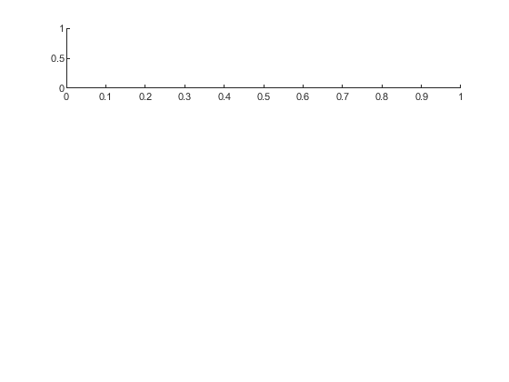
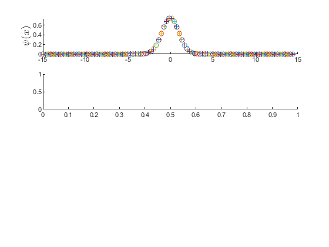
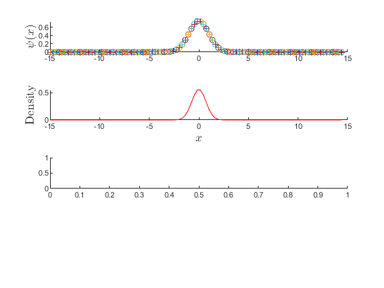
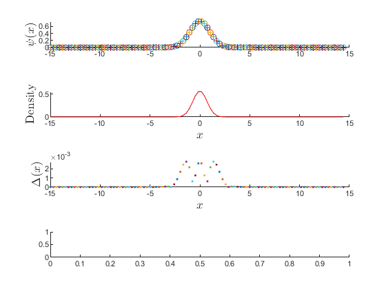
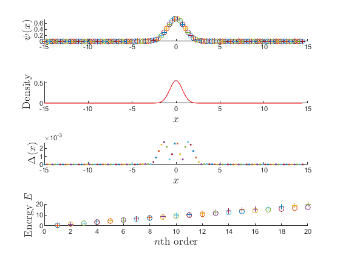

Contents
clear
clc
ncase = 100;
xf = -15;
xa = 15;
xspan = linspace(xf,xa,ncase);
N = length(xspan);
H = zeros(N-2,N-2);
(state - 1)th state
state = 1;
Caculate H matrix's element
for i = 1:length(H)
delta_x = xspan(i+1) - xspan(i);
k = 1/(2*delta_x^2);
H(i,i) = 2*k+V(xspan(i));
end
Add k to matrix
H(length(H)-1,length(H)) = -k;
H(2,1) = -k;
for i =2:(length(H)-1)
H(i+1,i) = -k;
H(i-1,i) = -k;
end
Caculate egeinvectors(psi) and egeinvalues(E) of H where psi and E is numercial
[psi,E] = eig(H);
Caculate psi of analysis
psi_ana = zeros(length(psi),1);
for i = 1:length(psi_ana)
psi_ana(i,1) = ptry(xspan(i));
end
Normalize wave function of all state of numercial
S_norma =zeros(1,length(psi_ana));
for i = 1:length(psi)
S_norma(1,i) = trapz(xspan(1,1:length(H)),conj(psi_ana).*psi_ana);
end
for i = 1:length(psi_ana)
psi_ana(i,1) = psi_ana(i,1)./sqrt(S_norma(1,i));
end
Normalize wave function of all state of analysis
S_norm =zeros(1,length(psi));
for i = 1:length(psi)
S_norm(1,i) = trapz(xspan(1,1:length(H)),conj(psi(:,i)).*psi(:,i));
end
for i = 1:length(psi)
psi(:,i) = psi(:,i)./sqrt(S_norm(1,i));
end
Caculate different between analysis and numercial
delta = zeros(length(psi),1);
for i = 1:length(psi)
delta(i,1) = psi_ana(i) - psi(i,state);
end
tiledlayout(4,1)
nexttile

plot psi of x
ylabel('$\psi(x)$','FontSize',13,Interpreter='latex')
hold on
for i = 1:length(psi)
plot(xspan(i),psi(i,state),'-o')
plot(xspan(i),psi_ana(i),'+')
end
hold off
nexttile

plot density of analysis and numercial
hold on
xlabel('$x$','FontSize',13,Interpreter='latex')
ylabel('Density','FontSize',13,Interpreter='latex')
plot(xspan(1,1:length(H)),abs(psi(:,state)).^2)
plot(xspan(1,1:length(H)),abs(psi_ana).^2,"Color",'red')
hold off
nexttile

plot different between analysis and numercial
xlabel('$x$','FontSize',13,Interpreter='latex')
ylabel('$\Delta(x)$','FontSize',13,Interpreter='latex')
hold on
for i = 1:length(psi)
plot(xspan(i),abs(delta(i,1)),'.')
end
hold off
nexttile

plot energy of analysis and numercial
xlabel('$n$th order','FontSize',13,Interpreter='latex')
xlim([0 20])
ylabel('Energy $E$','FontSize',13,Interpreter='latex')
hold on
for i = 1:length(E)
nth = i;
plot((nth), E(i,i),'-o')
plot((nth),(nth-1+0.5),'+')
end
hold off

function V = V(x)
V = 0.5*x^2;
end
function ptry = ptry(x)
ptry =(((1/pi)^(1/4)*sqrt(1)^(-1).*exp(-x.^2/(2))));
end